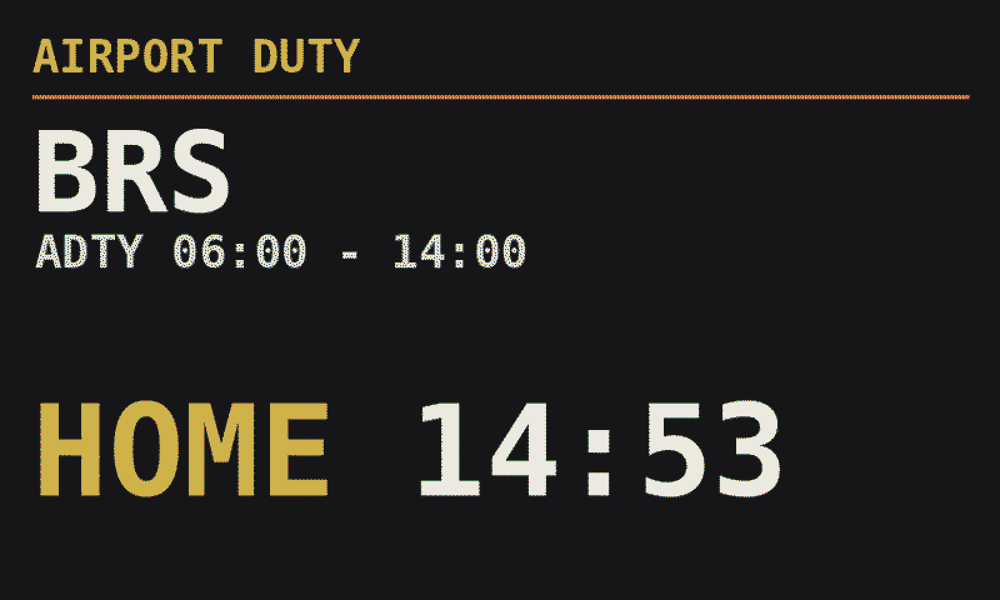
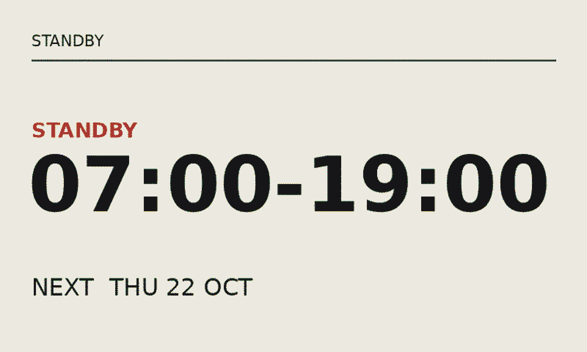
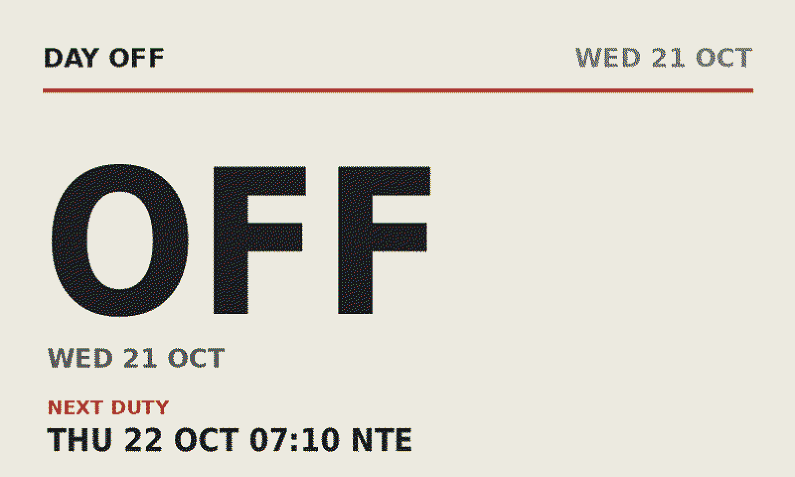
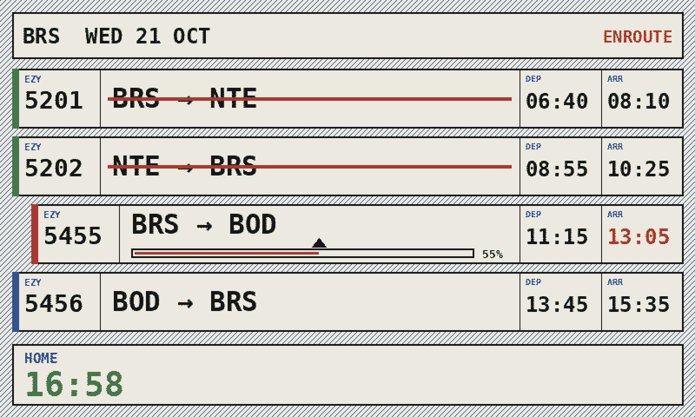
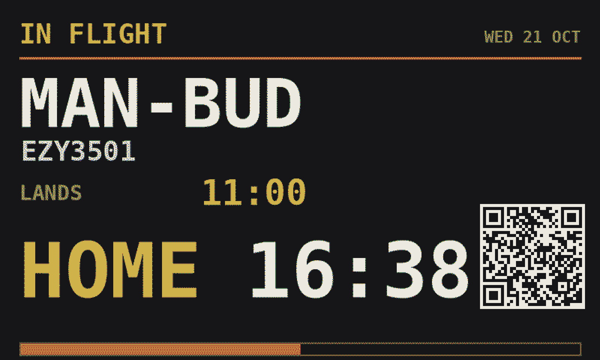
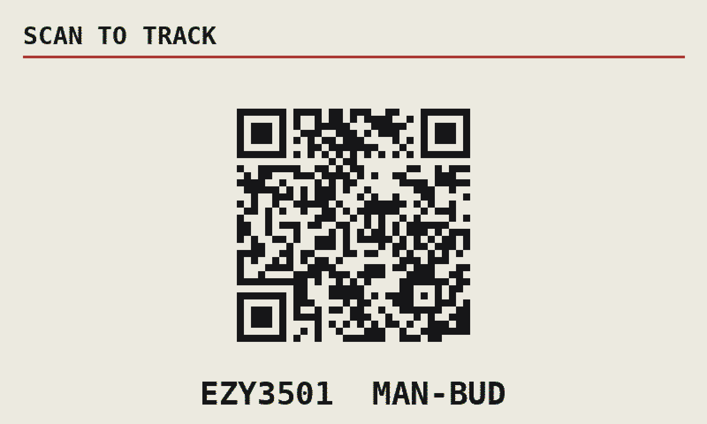
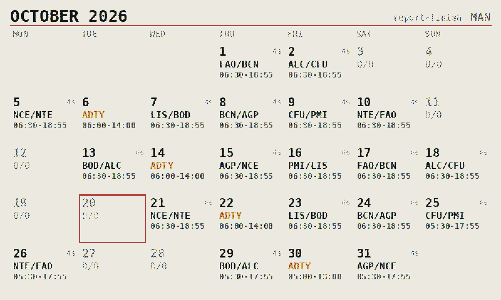

Questions, answered.
If your question isn't here, send it over. Real answers, from someone who flies the line.
01 / Choosing
What exactly am I buying?
The Ident software, with its guide and support. You buy the hardware yourself, from whichever supplier you like: we don't mark up hardware or hold stock, so you pay the going rate.
One box: Seeed's reTerminal E1002, a 7.3″ colour e-paper display with its own battery, case and stand. Nothing to assemble. In testing, not on sale yet.
A Raspberry Pi, a Pimoroni Inky Impression panel and a memory card. No soldering. The reference build comes to about £126.
A Raspberry Pi, one or two 64×32 HUB75 LED panels, a matrix bonnet and a separate power supply for the panels. More of a project. The LED parts.
What do Mode C and Mode S add?
Mode A is bought once and keeps working for as long as you have it: your roster, every style, the wake-up time and the month calendar.
- Mode A, £19.99, once. Your scheduled times, from your roster. If you allow flight lookups, delays and diversions too.
- Mode C, £2.99 a month or £29.99 a year. Live landing times from the aircraft’s actual position, and diversions as they happen.
- Mode S, £3.99 a month or £39.99 a year. Everything in Mode C, plus the drive home in traffic and the detailed style.
Modes C and S are subscriptions because the live flight data is charged for every request, for every display, and its terms don’t let us pass our access on to you. The price is all you pay, with no VAT or other fees. UK customers only for now. Cancel in two clicks; within 14 days you get everything back. Not on sale yet. Compare the three, or see what each one sends.
Flight data: Flightradar24
Which one should I choose?
If you'd rather not build anything, or want it on battery, the E1002 (once it's on sale). If you want every style, a choice of sizes and settings from your phone at any time, a Pi with e-paper; the 7.3″ pleases most people. If you want it to glow like a departure board in a study or a hall, the LED.
Raspberry Pi or reTerminal, feature by feature, and e-paper or LED.
Which e-paper size should I choose?
The 7.3″ Inky Impression if you're unsure: readable across a room and wide enough for the route maps. The 4.0″ is the budget option and works well on a desk or a fridge door, but it is too small for the month and week views. The 13.3″ is a proper wall piece but costs considerably more. All use Pimoroni's six-colour Spectra 6 e-paper and all are fully supported. The E1002 is 7.3″ only.
Which LED panel size should I choose?
At least one 64×32 panel. Ident shows four lines on an LED panel: what's happening, the flight and route, the landing time and the home time. On one 64×32 panel a line too long for it scrolls sideways, then starts again. Two 64×32 panels chained side by side (128×32) show every line at once, with nothing scrolling. The 64×32 panel is the commonest HUB75 panel there is, about £17–£22 each; if you buy two, buy the same pitch from the same supplier.
64×64 and 128×64 panels aren't supported yet: Ident draws only on the top 32 rows, so half the panel stays dark. Please don't buy one for Ident until this page says they work.
The e-paper styles, the scan-to-track code and the month calendar are e-paper only.
I already own the 5.7″ Inky Impression. Will it work?
Yes, fully. That's the panel Ident was originally built on, and it has seven colours rather than six. Pimoroni have discontinued it, so it isn't a sensible choice for a new build, but if you have one it will keep working.
Which Raspberry Pi do I need?
A Raspberry Pi 3 Model A+ is the reference build: header fitted, and its Wi-Fi works on both 2.4 GHz and 5 GHz. The Pi Zero 2 WH is smaller and uses less power, and is the first choice when you can get one, but its Wi-Fi is 2.4 GHz only (see Wi-Fi, below). A Pi 4 (1 GB) also works with e-paper. Buy the “WH” Zero, which has its header fitted; the plain Zero 2 W has nothing to plug the display into. The full list.
02 / Power, Wi-Fi and outages
How does each display cope with power and Wi-Fi?
| Pi with e-paper | Pi with LED panel | Ident for E1002 | |
|---|---|---|---|
| Stays plugged in? | Yes, by design. A PiSugar battery is optional. | Yes, always, with a separate supply for the panel. | No. It has its own battery and charges over USB-C. |
| On battery | About 4 days on a PiSugar 3, about 13 on a PiSugar 3 Plus. Our estimate, not yet measured. | No battery version. | Not measured yet. Seeed quote up to three months with their own software. |
| Wi-Fi | 2.4 or 5 GHz on a Pi 3 A+ or Pi 4. 2.4 GHz only on a Pi Zero 2 W. | As the Pi it runs on. | 2.4 GHz only. |
| Power cut | The last picture stays on the screen. It starts again by itself when the power returns. | The panel goes dark. It starts again by itself when the power returns. | Carries on, on its battery. |
| Wi-Fi down | Shows what it last knew. After two hours it adds “Not updated since” and the time. | Shows what it last knew. After two hours the top line says “Not updated” and the time, in yellow, and the rest turns grey. | Shows what it last knew. After two hours it adds “Not updated since” and the time. |
| In the dark | No light of its own, like paper. | Glows, so it reads in a dark hall. | No light of its own, like paper. |
| Electricity | About £1–£7 a year, depending on the Pi. | About £15–£20 a year. | Only what it takes to recharge. |
Does it need to stay plugged in?
No. It runs on its 2000 mAh battery and sleeps between checks: every 20 minutes while you're rostered to work, hourly otherwise, and not overnight unless you're working. We haven't measured Ident's battery life yet and will publish it when we have. Left on USB, choose Plugged in in its settings: it then checks every 10 to 15 minutes and keeps its settings page open.
It's designed to be plugged in, so it is always awake and its settings are always reachable. For no cable, add a PiSugar battery: the Pi wakes, updates the screen and switches itself off until the next check. To change settings, plug it in.
Yes, always. An LED panel draws several watts and needs its own 5 V supply.
With no power, an e-paper screen keeps its last picture and can't change it to say it's old. On battery, both products warn below 20%, and the Pi prints the time it last drew the screen.
How much electricity does it use?
At the current price cap (26.32p per kWh), one watt left on all year costs about £2.30. These are typical published figures, not our own measurements:
| Build | Typical draw | Per year |
|---|---|---|
| Pi Zero 2 W + e-paper | ~0.5 W | ~£1.20 |
| Pi 3 Model A+ + e-paper | ~1.4 W | ~£3 |
| Pi 4 + e-paper | ~2.7 W | ~£6 |
| Any Pi + LED panels | ~6–9 W | ~£15–£20 |
E-paper draws nothing while it shows a picture, only during the 30-second redraw. An LED panel's draw depends on its brightness and how much of it is lit.
Which Wi-Fi does it need?
The E1002 and the Pi Zero 2 W need 2.4 GHz Wi-Fi. The Pi 3 Model A+ and Pi 4 work on 2.4 or 5 GHz. Most home routers offer both. If yours has 2.4 GHz switched off, or steers everything onto 5 GHz under one name, switch 2.4 GHz on or give it its own name.
On an iPhone hotspot, turn on Maximise Compatibility to give the E1002 or a Zero 2 W the 2.4 GHz it needs.
What happens if the Wi-Fi goes down?
The display keeps showing what it last knew, and your roster stays on it. After two hours, e-paper adds “Not updated since” and the time; an LED panel puts “Not updated” and the time on its top line and turns the rest grey. The clock comes from the internet, so a long outage can leave the date behind; it corrects itself a minute or two after the Wi-Fi returns.
To give it new Wi-Fi, each one raises its own Ident-Setup network for your phone to join: the Pi by itself after two minutes offline, the E1002 when you hold a button for three seconds and it can't join the home Wi-Fi.
03 / Setting up
What does the screen show before it's set up?
A getting-started board: SWITCH ON, JOIN WI-FI, ADD ROSTER, and a line saying how to begin. E-paper keeps it with no power, so it's what you see when you open the box. When it raises its setup network, the screen changes to the two steps and a code your phone can scan to join it.
“Switch on, then press the green button.”
“Plug in and switch on to begin.”
The LED panel shows plain text: there isn't room for the board on 32 pixels.
How do I set it up?
Switch it on and press the green button. On your phone, join Ident-Setup (the password is identsetup), open http://192.168.4.1 if the page doesn't appear, and enter your home Wi-Fi, your roster link, your base and journey times. About a minute later the board appears.
Flash the memory card, push the display onto the Pi, and switch on. Join Ident-Setup from your phone (password identsetup) and pick your home Wi-Fi. Then, on your home network, open the setup page: it walks you through your base, airline and roster link. Allow an unhurried hour for a first build.
As the Pi, plus the panel wiring, its own power supply and the LED driver, which is built on the Pi rather than installed. Set aside an afternoon.
On both, you enter your roster link on your home network only, because the setup network's password is printed here for anyone to read.
How do I change settings later?
Hold any button for three seconds, until it beeps. The board joins your Wi-Fi and shows an address (http://ident.local, or a number); open it on your phone. The page closes itself 15 minutes after you last use it, or when you save. On battery the display sleeps between checks with its Wi-Fi off, so ident.local only opens after you hold a button. Set to Plugged in, the settings page stays open all the time.
From the Ident icon on your phone. The first time you open the control panel at ident.local:8080, add it to your home screen (Share, then Add to Home Screen on an iPhone; the ⋮ menu on Android) and it opens full screen like an app. Any browser on your home network works too. On a PiSugar battery it's asleep most of the time, so plug it in to change anything.
Can I reach it when I'm away from home?
On a Pi, yes, and it's optional. The simplest route is a free Cloudflare tunnel, which gives you a web address you can open from anywhere without installing anything. Tailscale is the other option and gives a permanent private address. Both are free for personal use and neither requires opening ports on your router.
Left switched off, your display is reachable only from your own home network. The E1002 can only be reached on your home network.
Is the settings page protected?
Yes. To sign in, tap Show a code on the display (on the E1002 you can also hold any button for 3 seconds) and type the 4-digit code the display shows. That phone stays signed in for 30 days. Only someone who can see the display can sign in. Sign out every phone, at the foot of the page, signs them all out.
Can I run more than one display?
Yes. Point each one at the same roster link and they'll stay in step by themselves, no server in the middle. Give each a name (Kitchen, Study) so you can tell them apart.
04 / Rosters
Which airlines does it work with?
Ident was built and tested against easyJet eCrew calendar feeds. It also reads the calendar link from RosterBuster, for any airline RosterBuster supports. We built that from RosterBuster's published settings and have not yet seen a real RosterBuster roster, so tell us what it gets wrong. Any roster published as a standard .ics calendar has a good chance of working, either as a live feed or by uploading the file by hand. Reading eCrew roster PDFs is an optional extra you can install if you need it.
If your airline isn't covered, don't buy yet: apply for a free Ident instead. Help us read your airline's roster and the licence is yours free, permanently. If it turns out not to be possible we'll say so rather than take your money.
How does it get my roster?
You paste your roster link into the control panel once. Ident then re-checks it every 30 minutes, so roster changes appear without you doing anything.
How should I set up the eCrew app?
eCrew copies your roster into a calendar on your phone, and Ident reads that calendar. Out of the box eCrew puts a whole day’s flying into one calendar entry; Ident is built for one entry per flight. In the eCrew app:
- ☰ → Settings → turn off Combine Flights.
- Turn on AutoSync.
- Save, then ☰ → Upload to Calendar.
The calendar only updates while the eCrew app is running, so open it after any roster change. If Ident spots several flights in one entry, the control panel reminds you of this setting.
How do I use RosterBuster?
RosterBuster can give you a private calendar link with your whole roster in it. Ident reads that link.
- In the RosterBuster app: Settings → Events. Set Flight number prefix to IATA. Turn on Generate report, so the board shows your real report time.
- On rosterbuster.com, signed in: Settings → Export → Calendar → Enable webcal link. Copy the link. It starts https://rosterbuster.com/ical/private/.
- Paste it into Ident as your roster link, with RosterBuster chosen above the link box.
RosterBuster's layover events can be on or off; Ident ignores them. Your roster is already on RosterBuster's servers: the link sends it from there to your display, and nothing comes to us.
If the link ever gets out, make a new one in the app: Calendars → WebCal → Unsubscribe, tick Generate new WebCal URL, then Subscribe. Paste the new link into Ident.
Where do I find my roster link?
Ident needs a link to your calendar, not a downloaded calendar file: a link keeps up with changes, a file doesn't. It is a long web address, usually ending .ics, and it may be called a secret address, subscription link or ICS link.
eCrew copies your roster into your phone's calendar. Set up eCrew first, then copy that calendar's link from Google or iCloud, below.
Follow the RosterBuster steps.
Look for subscribe, export to calendar or iCal feed, and copy the link rather than download the file. If it only gives a file, upload that in the control panel.
Google Calendar: on a computer, Settings → Settings for my calendars → the calendar → Integrate calendar → copy Secret address in iCal format. There's a Reset button beside it if the link ever gets out. (Google's instructions)
iCloud: iCloud.com/calendar → the info button beside the calendar → turn on Public Calendar → Copy. The link starts webcal://; paste it exactly as given, Ident understands it. (Apple's instructions)
Outlook.com / Microsoft 365: Settings → Calendar → Shared calendars → Publish a calendar, choose the calendar and the option showing all details, publish, then copy the ICS link, not the HTML one. (Microsoft's instructions)
To check it, open it in a browser: the right link downloads or shows text beginning BEGIN:VCALENDAR. A login page or a normal-looking calendar is the wrong link.
Keep it private. Anyone with the link can read your whole roster without signing in. Don't email it, post it or send it to support; Ident keeps it out of its own support report.
Does it handle standby, training and days off?
Yes. It recognises standby, training and non-flying codes and shows the right screen. On a day off it shows your next duty: the date, report time and where you're going.



What about multi-sector days?
All destinations are shown, not just the first. A four-sector day reads as NTE/BOD, and a button press gives report time and sector count.

What does the board show if the flight diverts?
If you allow flight lookups, a diversion turns the board red: DIVERTED, the airport the aircraft is now heading for, and the original destination crossed out. The home time is withdrawn and the board says HOME TBC, because a home time worked out for the original airport would be wrong.
A new home time appears once your roster has the flight out of the diversion airport. eCrew only passes roster changes to your calendar when its app is opened, so open eCrew again once the onward journey has been arranged, and leave it open for about a minute.
Can it tell me what time to wake up?
Yes. Set how long before report you need, 90 minutes by default, and the wake time appears on days off and while the board counts down to report. Because it's worked out from your roster, a change to your report time moves the alarm with it.
If you commute, there's an option to add that day's travel to report on top, so the first day of a block shows the genuinely early time rather than the one that assumes you're already at base. Set the wake time to 0 in settings to hide it.
My commute home is a flight, not a drive. Can it handle that?
Yes. Tick "I commute to base" in settings and you get three numbers instead of one: the ordinary commute for mid-block days, the ten minutes from a crashpad or hotel, plus separate times for travelling to base on the first day of a block and getting home after the last one.
Ident works out which day is which from your roster, so a two-hour flight home is only counted on the day you actually take it. The home time stays on screen for the whole journey, not just until the last sector lands.
I commute to base. Can it show my positioning flight?
Yes. Add the flight number and date in the control panel and Ident looks up the route and times itself. Living in Amsterdam with a Gatwick base, you'd add the morning AMS–LGW: the board follows you out of Amsterdam and then hands over to your roster duty when you report, so the people at home see one continuous day rather than a gap.
The same works for anything off-roster with a flight number: deadheading, positioning home, or a holiday flight.
Can it show flights I'm travelling on as a passenger?
Yes, personal flights can be added by flight number and are tracked the same way, with the report time set for leisure travel rather than duty.
Roster codes: what if Ident doesn't know one?
Airlines add and change roster codes, and a new one can appear before a software update catches up. When your roster contains a code Ident doesn't recognise, the control panel tells you at the top of the page and offers to learn it: choose a day off, a day off with the code kept private, standby at home or at the airport, training, or a working day that shows its code. Until you do, that day appears on the wall as a plain duty showing the code, so nothing is hidden or invented. You can also add codes ahead of time under Airline · locations · hardware. These codes stay on your display; they are never sent to us.
05 / Privacy and data
Where is my roster stored?
On your device, and nowhere else. It is fetched by your display, from your airline, over your own internet connection. We never receive it, cannot see it, and don't operate a service that holds it.
What exactly leaves my display?
Your roster never leaves your display, unless you switch on specific features such as flight tracking. Below is everything your display can send, where it goes and when. On a Pi you choose with the privacy slider during setup, and each stop adds the next row; nothing after the first row is sent until you have saved a choice, and you can switch each row on or off by itself later. The E1002 has no slider: each row has its own switch on its settings page.
Your licence key and the display's serial number go to our licence server, licence.xpdr.aero, once, when you activate the licence. Both products, always: it is the one thing Ident can't work without.
Your display fetches your roster from your own calendar link, the same address you would open in a browser. It goes from your airline's or calendar's server to your display; nothing about it comes to us. Pi: the “Roster and updates” stop (below it, you can still upload a roster file in the control panel). E1002: always; it is what the display is for.
Once a day your display asks licence.xpdr.aero whether there is a new version. The request carries your licence certificate, which names your licence and the display's serial number, so the server knows it is licensed. No roster, settings or diagnostics. Pi: the “Roster and updates” stop; at Full privacy it never checks, and so never updates. E1002: on unless you turn off automatic updates.
The four-letter code of the airport you are at or flying to (EGKK for Gatwick, say) goes to aviationweather.gov, the US weather service, at most every 15 minutes, while a weather band is chosen. That is the same request anyone looking up that airport's weather makes. Pi: the “Weather” stop. E1002: no weather, so never.
From 20 minutes before each flight's scheduled departure until it lands, the flight number, the departure airport and the scheduled departure time go to licence.xpdr.aero: every 10 minutes on the ground, every 20 in the cruise and every 5 near landing. Our server asks Flightradar24, the flight data service, and passes the answer back. It keeps nothing beyond a minute or two of cache, so displays asking about the same flight share one answer. If a flight is never seen, for example because it was cancelled, the display stops asking some hours after it was due.
The flight request carries a pass, not your licence: about once a day the display shows its licence certificate to get that pass, and that request names no flight. Available on every licence, Mode A included. Pi: the “Flight status” stop, off until you choose it. A display set up before November 2026 keeps its roster and updates, and asks you once in the control panel whether to turn flight status back on. E1002: off until you switch on “Show flight status”.
Mode S only. While you are on your way home, two points go to licence.xpdr.aero: where the drive starts (the car park or airport) and your home location, each rounded to about 10 metres. Our server asks Google Maps for the drive time in traffic and passes it back. No flight, time or licence goes with them, they travel under a separate pass from flight status, and nothing is kept. Your home location can be a nearby corner or shop instead of your house. Pi: the “Drive times” stop. E1002: off until you switch it on.
One small report a day, of counts and fixed words (the full list), goes to licence.xpdr.aero, not tied to your licence key or serial number. Pi: only at Full accuracy, or if you switch it on by itself. E1002: off until you tick it.
Both products set their clock from public internet time servers. The request asks for the time and carries nothing else.
Every server your display talks to also sees your home's internet address, as any website you visit does. Scanning the flight's QR code opens the flight on Flightradar24 on the phone that scanned it; the display itself sends nothing when you do. The same list, in the words the Pi shows beside its slider, is in the privacy notice.
Do I need an account?
No. There's no sign-up and no cloud login. What your display sends, and when, is listed in full under What exactly leaves my display?
Does Ident send you any data about my display?
No data about how your display is working is sent unless you choose to send it. Diagnostics reporting is off when you buy it, stays off until you switch it on, and never switches itself on or off. On a Pi it is the top stop of the privacy slider, Full accuracy, or its own switch beside the slider; on an E1002 it is a tick box on the settings page.
Two requests go whether or not reporting is on, because they concern your licence: the licence check when you activate it, and the daily update check. Neither carries your roster, settings or diagnostics; both are described in What exactly leaves my display?
If you do switch it on, your display sends one small report a day, made only of numbers and fixed words, so there is nowhere in it for a roster to travel. Everything a report can contain, and how to see or delete it, is in the privacy notice.
Does the board show sensitive roster codes?
Not unless you ask it to. These are hidden by default and shown as an ordinary day off, in three groups: fitness and absence (SICK, S/L, MED, LOL, UNFT, FTGD, NSO, UNCT, NAVB, RFDP); work and HR (MEET, INT, SOC, DISC, GRV, SUSP, TERM, RESN, OFLD); and leave and family (COMP, CMPU, MAT, PAT, PARL, UNPD).
You choose which. Setup lists them by group, with a select all / none, and you tick any you'd rather see. The same list is in settings. Nothing is revealed unless you ask.
Hidden codes aren't merely kept off the screen; they're discarded when your roster is parsed, so the original never reaches the device's storage. Nothing that isn't kept can appear later through a new display style, a diagnostics export, or a screenshot you send to support. The trade-off: revealing a code only affects rosters read afterwards, so saving the setting re-reads your feed.
Is my roster confidential to my airline?
Worth checking your own company's IT and data policies: some airlines have rules about where crew data may be processed. Because Ident keeps everything on your own hardware, it's a far easier conversation than a cloud service, but the responsibility is yours.
Why doesn't Ident show ACARS messages?
ACARS often carries sensitive information, and most pilots would rather it wasn't seen by anyone who doesn't need to see it. Showing it on a wall at home could also tempt pilots to send Operations messages they don't need, just to have them appear on the Ident in flight.
For those reasons, we decided not to include it.
06 / Living with it
How often does the screen change?
It looks at your roster every 20 minutes while you're rostered to work, more often when a change is likely or during a standby, and hourly otherwise (every 10 to 15 minutes if set to Plugged in). It only redraws when the picture has changed, plus once a day to keep the screen healthy. A redraw takes about 27 seconds on our unit.
Plugged in, it checks your roster every 30 minutes and redraws when something meaningful changes. A redraw takes about 30 seconds. It's a duty board, not a clock.
Instantly. An LED panel can change every second.
While colour e-paper redraws, it flashes through its colours several times before it settles. That's normal for this kind of screen, not a fault.
How do I get software updates?
Once a day it checks for a new version and installs it by itself, but only firmware signed with Ident's key, and only with the battery above 40% or on USB. If a new version fails to start, it goes back to the one before. You can turn automatic installing off in its settings.
Once a day it checks for a new version. A new version installs itself only after it has been published for three days, and never mid-duty: a bad release sits on our own wall for three days before it can reach yours. Every update is checked before it's installed and your working version is backed up first. The control panel has an install now button and a switch to turn the automatic part off.
Updates need a licence; the daily check is described under Privacy and data.
The board is showing the wrong day.
Almost always a network problem. Neither product keeps time by itself yet: each sets its clock from the internet, so after a long time without Wi-Fi it can be left behind. Reconnect it and it corrects itself within a minute or two. A board more than two hours behind on its roster says “Not updated since”.
It won't connect to my Wi-Fi.
Check the band first: an E1002 or a Pi Zero 2 W needs a 2.4 GHz network. Then check the password, and that the network name is exactly right, capitals included. On a Pi you can add extra networks (a hotel or crashpad) from the control panel while it's still connected.
The screen looks washed out or the colours are odd.
Colour e-paper is muted by nature: it reflects light rather than emitting it. Cold rooms make it worse; the panel likes normal room temperature. On a Pi there's also a contrast toggle: hold the third button for two seconds.
How does the scan-to-track code work?
While a sector is airborne, Ident can show a QR code that opens that flight on a live tracking site. Press a button (the third on a Pi, the middle one on an E1002) and it fills the screen, big enough to scan from across the room, then goes back to the duty. You can also leave a small one in the corner of any display style: turn it on under Display in the control panel, and pick which corner.
The code only exists while a duty is running. On days off, standby and between duties there's nothing to track, so nothing is shown. Panels without buttons can still use the corner option. Not on LED panels.


Can it show the whole month?
Yes, two ways. Under Days off in the control panel, tick Show the month calendar on days off: on a day off the wall shows the whole month as a grid: destinations on flying days, standby and days off marked, today boxed. Or set one of the buttons to Month calendar to bring it up for a minute at any time.
The month and week views need a 7.3″ screen or larger: the E1002, or the 7.3″ or 13.3″ Inky. On the 4.0″ and the old 5.7″ they are too small to read, so Ident doesn't offer them there.

Can I show a photo instead on days off?
Yes, on e-paper. Upload a picture in the control panel and it takes over the screen on days off only, cropped to fill the panel. You can keep a single line across the foot showing your next duty, or switch that off. Photos are re-saved when uploaded, which strips EXIF, so location tags don't travel with them.
Can I get a refund?
Yes. If Ident doesn't work for you, tell us and we'll refund Mode A: in full if your airline's roster can't be read or it won't run on hardware from our parts list, and within 30 days if you simply don't get on with it. Mode C and Mode S: cancel within 14 days and we refund everything you paid for them. The full wording is in refunds. Hardware you bought elsewhere is a matter for that supplier, though we'll help.